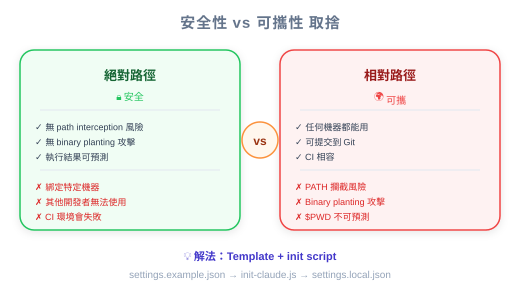

| 项目 | 细节 |
|---|---|
| 考试范围 | D3 — Claude Code Configuration & Workflows（占考试 20%） |
| Task Statements | 3.2 (custom commands & hooks), 1.5 (Agent SDK hooks) |
| 课程来源 | claude-code-in-action / 05-hooks / Lesson 17（纯文字课） |
Hook 脚本应使用绝对文件路径以确保安全，但绝对路径是机器特定的，跨团队共享时会坏掉。解法是模板文件（settings.example.json）搭配占位符，由自动化 setup script 转换为机器特定的绝对路径。PM 需要理解这一点，因为它影响新人入职、CI/CD 配置和安全合规。
| 方面 | 门禁卡系统 | Hook 配置 |
|---|---|---|
| 安全需求 | 扫描器必须连到确切的安全服务器 | Hook 必须指向确切的脚本文件（绝对路径） |
| 可移植问题 | 每栋大楼安全服务器在不同地址 | 每台开发机器文件在不同路径 |
| 解法 | 模板卡配置 + 大楼特定 setup | 模板设置文件 + 机器特定 init script |
| 入职 | 新员工在自己大楼激活卡片 | 新开发者在机器上执行 npm run setup |
💡 PM 重点
绝对路径 = 更高安全性，但需要自动化 setup 步骤。如果你的 PRD 要求 hook，在部署计划中包含"新开发者入职需要 setup 步骤"。

| 文件 | 谁创建 | 在 Git？ | 包含 Hook？ |
|---|---|---|---|
settings.json |
Team lead，commit | 是 | 一般设置（无机器特定路径） |
settings.local.json |
Setup script 自动生成 | 否 | 带绝对路径的 Hook command |
⚠️ PM 治理备注
如果合规 hook 只在
settings.local.json，它取决于每个开发者是否执行了 setup script。将此包含在入职检查清单中。
| 发生什么 | 影响 | 修正 |
|---|---|---|
settings.local.json 不存在 |
没有 hook 启用 | 执行 npm run setup |
直接复制 settings.example.json |
$PWD 占位符残留 |
正确执行 init script |
| ❌ 错误做法 | ✅ 正确做法 | 为什么 |
|---|---|---|
| 为方便允许相对路径 | 为安全要求绝对路径 | 安全审计会标记 |
| Commit 机器特定设置到 git | 用模板 + init script 模式 | 机器特定路径在其他机器坏掉 |
| 略过 setup 步骤文档 | 在入职检查清单中包含 setup | 新开发者会有不起作用的 hook |
团队部署了 PreToolUse hook 防止 Claude 访问凭证文件。新开发者加入后 Claude 在他们机器上可以读取凭证。最可能原因？
settings.local.json 从未生成安全团队要求所有 hook 脚本使用绝对路径。CI pipeline 在动态配置的 runner 上运行。如何配置？
settings.local.jsonsettings.json 硬编码路径安全审计发现 hook command 用相对路径。工程团队认为绝对路径会让设置文件难以共享。推荐解法？
$PWD 占位符的 settings.example.json 模板和自动化 init script